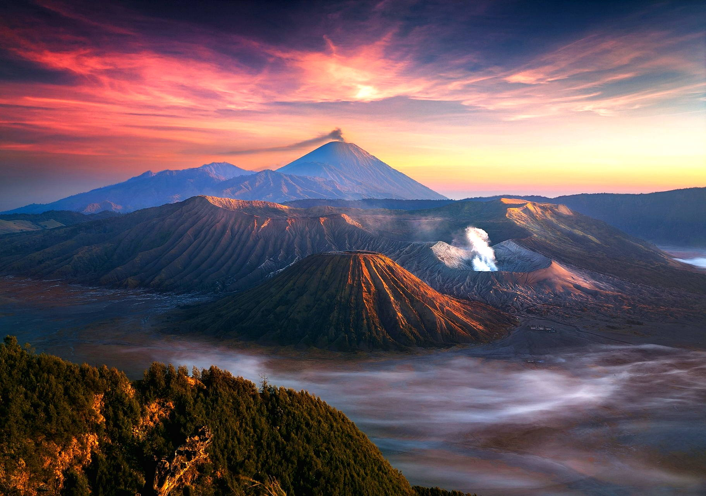

Wisata Jakarta
Salah satu yang juga jadi 'ikon' Jakarta atau identik sama Jakarta adalah gedung-gedung pencakar langitnya. Di Jakarta terdapat ratusan gedung pencakar langit yang berfungsi sebagai perkantoran, pertokoan, ataupun tempat tinggal (apartemen dan rumah susun).
Avatar: The Last
Airbender adalah
sebuah serial televisi fantasi
petualangan asal Amerika Serikat
yang ditayangkan di Netflix. Serial ini merupakan adaptasi live-action dari serial televisi animasi
dengan nama yang sama. Serial ini pertama kali diumumkan pada bulan September 2018.
daftar fasilitas
- wc bersih
- taman bagus
-
kuliner enak
menyajika makanan daerah jogja
Rp10.000 - Rp100.000
wc di sini sngt terawat da bersih
harga : Rp 5.000/orang
taman di sini punya fasilitas olahraga
harga : gratis